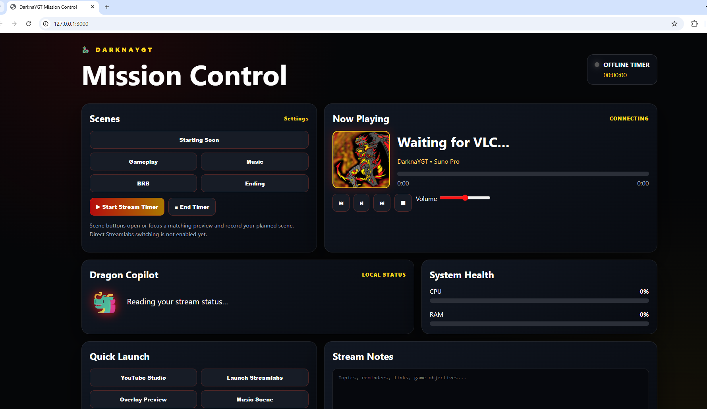
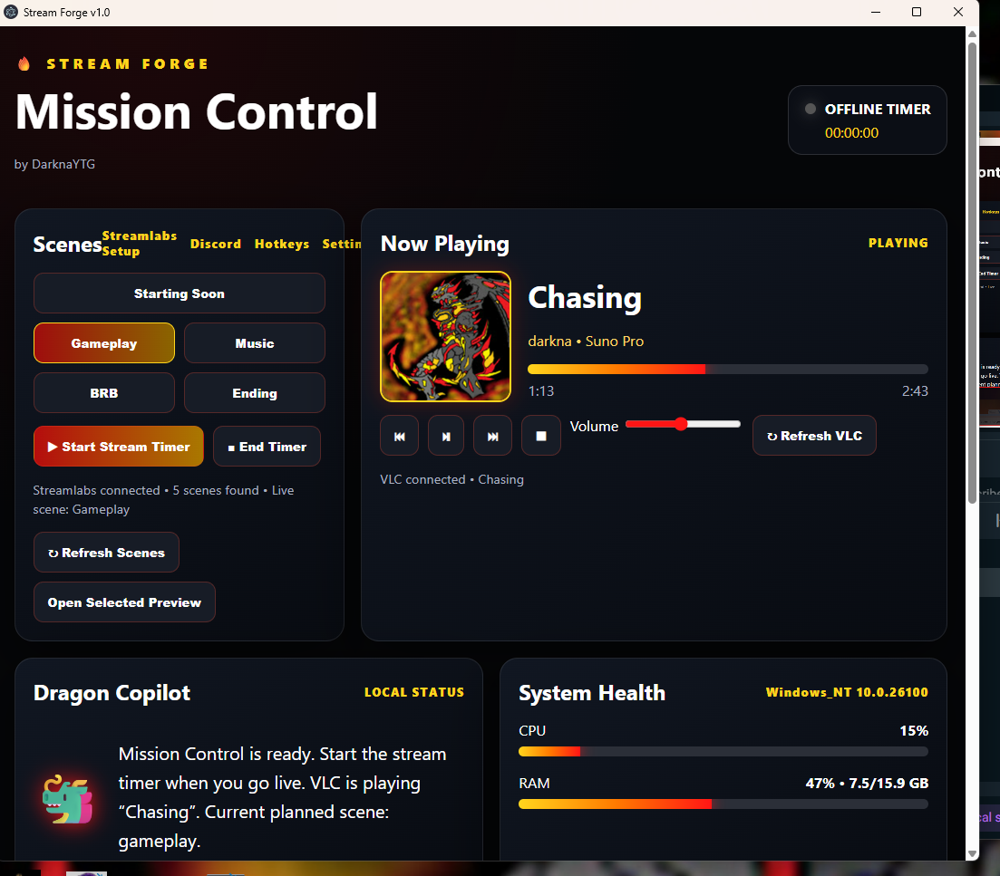
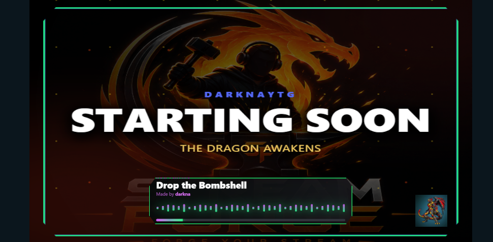
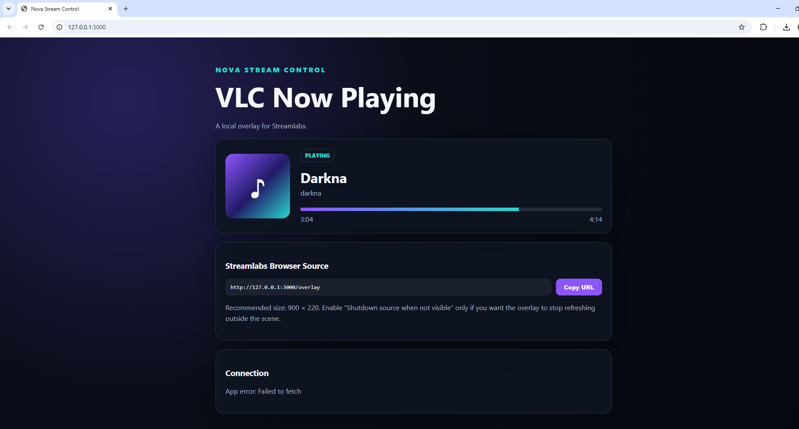
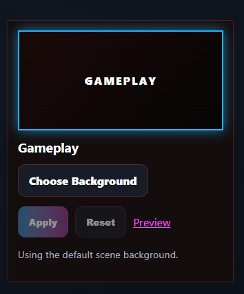
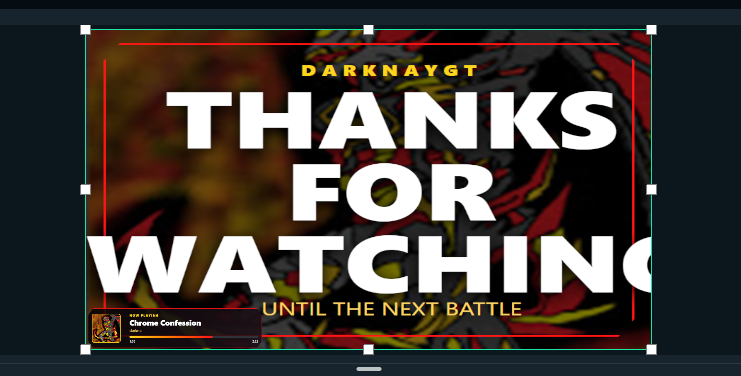

Getting started · 3 min
Install Stream Forge
Download, install and launch the app for the first time.
Clear, focused walkthroughs for installing Stream Forge, connecting your tools and building a setup that feels like your own.
assets/videos/. Full instructions are in the README.
Download, install and launch the app for the first time.

Prepare your scene workflow and connect Mission Control.

Change names, backgrounds and visual branding.

Configure now-playing information and waveform scenes.

Build and preview your own stream layouts.

Trigger scenes and controls without breaking focus.